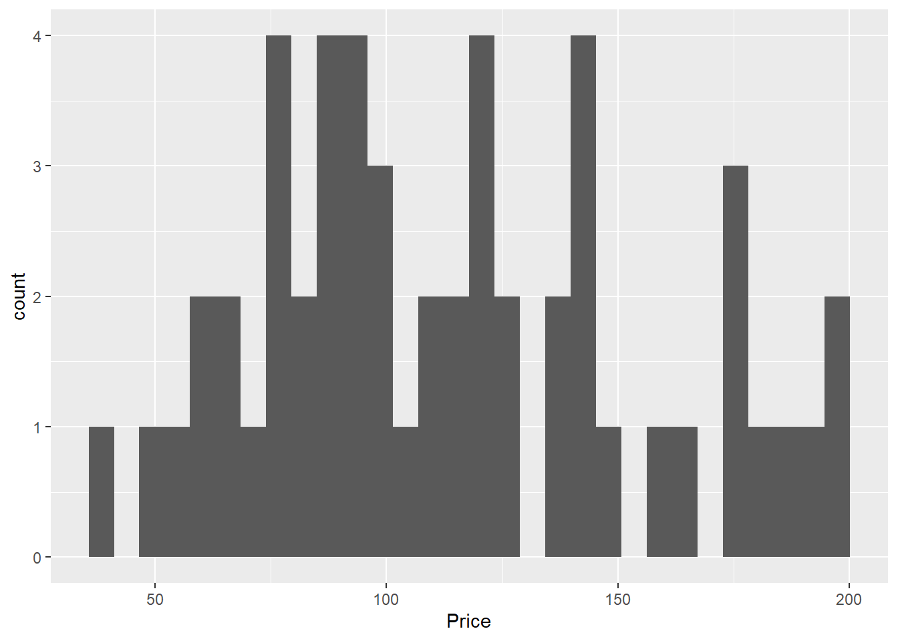
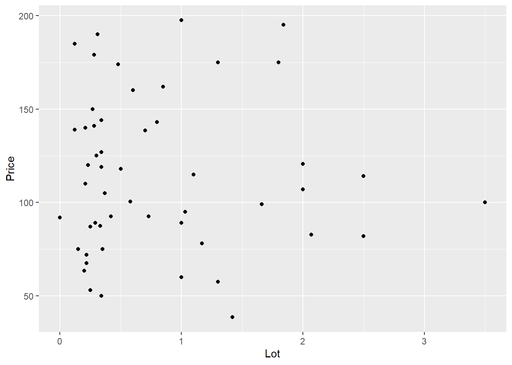
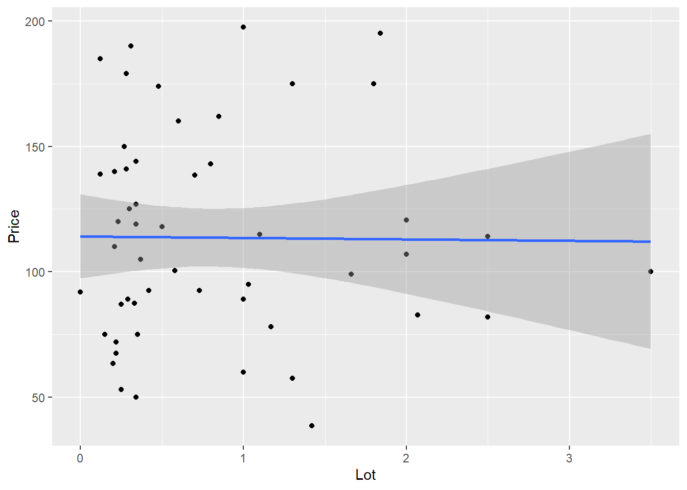

library(Stat2Data)
library(tidyverse)
library(ggplot2)R Assignment #1
Introduction
For this lab you will be estimating a simple regression to model the relationship between the size of a house (in 1,000s of square feet) and the price (in $1,000’s) for houses in Canton NY. The dataset is built into the ‘Stat2Data’ package, so make sure you load it into a chunk in R. As always, you first need to load packages. Load tidyverse, Stat2Data, and ggplot2. The lab must be written in Quarto/Rmarkdown and turned in as a .QMD and .HTML (or pdf) file. This is designed to be finished during class time, but you have until Sunday, September 17th (11:59 PM).
I’ve included some sample code but removed some variable/object names to force you to customize it to work. Make sure you turn in your own, unique lab assignment, but you are encouraged to collaborate in groups to work on the lab. Remember all code should be in chunks, sections labeled with headings, and text written in white space.
Loading Packages
Loading Data
data(HousesNY)
### IF you want to learn more about the dataset
?HousesNYSummary Statistics of Key variables
Before you ever begin analyzing data, you need to check the data to make sure it measures what you think you think it is, and check for outliers, potential errors, or other properties of each variable. The most basic form of that is to estimate basic descriptive statistics. The below code takes the descriptive statistics for the Price variable from our HouseNY dataframe and constructs a table with the mean, sd, min, max, and number of observations.
HousesNY |>
summarise(mean_price=mean(Price), sd_price=sd(Price), min_price=min(Price), max_price=max(Price), sample_size=n()) mean_price sd_price min_price max_price sample_size
1 113.6321 41.43006 38.5 197.5 53Question 1: Use the sample chunk code above to calculate the descriptive statistics for the variable “Size” and include a brief write up interpreting the table
In particular, note if the values make sense (are there any negative ones, really high/low values, etc). 2-3 sentences should suffice.
Histogram of Key Variable
While descriptive statistics are useful, it’s also incredibly helpful to plot the data to get a better idea for the distribution of observations. Histograms can help us see if there are outlier, and get an understanding if the variable is actually continuous or not. The sample code below makes a histogram for the price variable.
ggplot(HousesNY, aes(x=Price))+ geom_histogram()`stat_bin()` using `bins = 30`. Pick better value with `binwidth`.
Question 2: Using the sample code above as a model, make a histogram of the size variable.
Make sure to include a sentence or two noting if the variable appears continuous, if there are any outliers, and any other notable observations on the measure.
Linearity condition
We can use a scatter plot to check to see if the relationship is linear or not. The sample code below makes a scatter plot between the a property’s lot size (in acres) and price. geom_point tells R that the ggplot should be a scatter plot. It looks like there is no clear pattern or relationship in the data.
ggplot(HousesNY, aes(x=Lot, y=Price))+ geom_point()
We can add a line of best fit by adding the command geom_smooth to our gpplot (see below). We add the instructions method="lm" to tell R to force the function to be linear (a straight line). Notice the line is essentially flat, which would indicate no relationship.
ggplot(HousesNY, aes(x=Lot, y=Price))+ geom_point() + geom_smooth(method="lm")`geom_smooth()` using formula = 'y ~ x'
Question 3- Construct a scatter plot
Make a scatter plot between size and price. Include a line of best fit (make it linear). Include a brief description of what you observe. Is the slope negative/positive? Does it look roughly linear? etc.
Linear Model
We will get to the other conditions later, but for now we decide to estimate a linear model. The sample code below tells are to estimate a linear model (lm) with the dependent variable being Price, and independent variable Lot. We need to tell R to use our dataframe, and save the results into an object. When we summarize that object, we can see the regression table.
model1 <- lm(Price~Lot, data=HousesNY)
summary(model1)
Call:
lm(formula = Price ~ Lot, data = HousesNY)
Residuals:
Min 1Q Median 3Q Max
-74.775 -30.201 -5.941 27.070 83.984
Coefficients:
Estimate Std. Error t value Pr(>|t|)
(Intercept) 114.0911 8.3639 13.641 <2e-16 ***
Lot -0.5749 7.6113 -0.076 0.94
---
Signif. codes: 0 '***' 0.001 '**' 0.01 '*' 0.05 '.' 0.1 ' ' 1
Residual standard error: 41.83 on 51 degrees of freedom
Multiple R-squared: 0.0001119, Adjusted R-squared: -0.01949
F-statistic: 0.005705 on 1 and 51 DF, p-value: 0.9401Question 4- Estimate a linear Model
Using the sample code above, estimate a linear model between size and price and summarize the results.
Question 5- Interpret the Model
Is there a relationship between housing size and price? Note whether the relationship is positive or negative, and if the relationship is statistically signficant. Include a sentence interpeting the intercept, and one interpreting the coefficient for “size.” What can we conclude about the influence of house size on price?
Note, pay careful attention to your units!
Turn in report
Once you have finished, turn in your QMD file and rendered report onto Moodle.